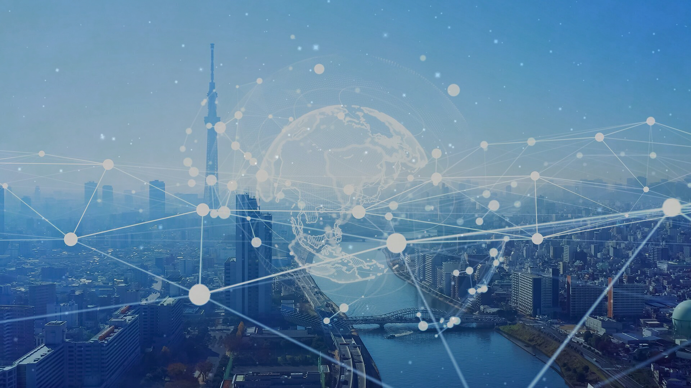
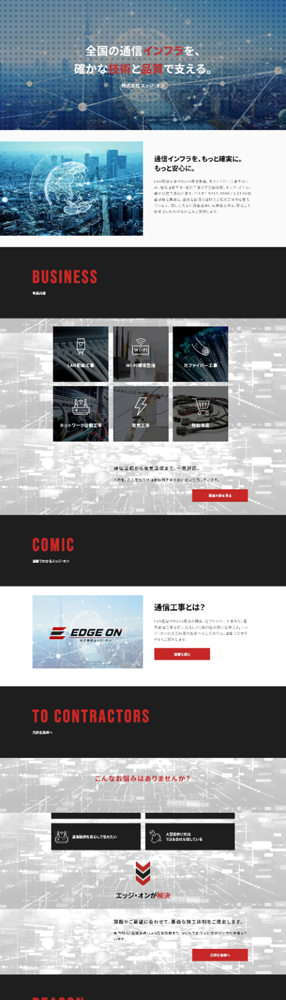
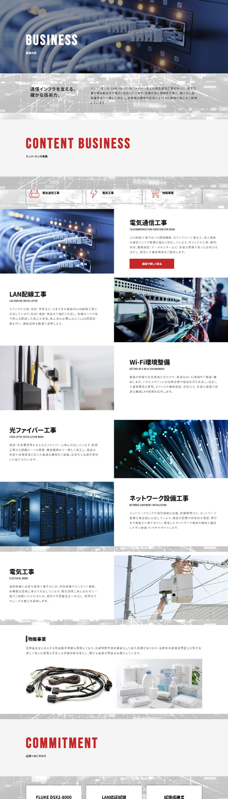
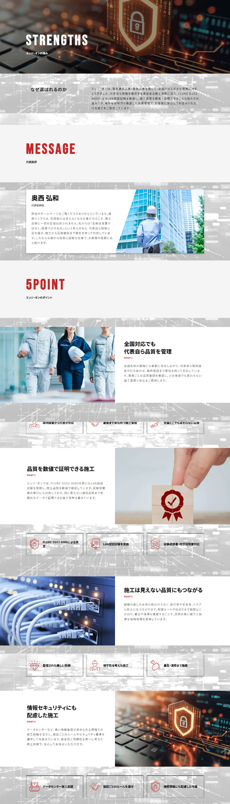
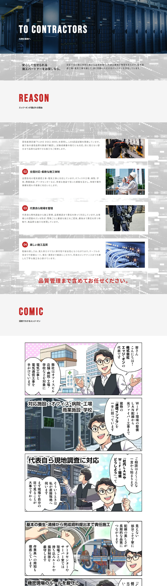

担当範囲
ワイヤーフレーム設計 / デザイン
外注様へコーディング指示
ライティング

ワイヤーフレーム設計 / デザイン
外注様へコーディング指示
ライティング
法人からの新規問い合わせ増加
公共事業への参入
約1.5ヶ月
Figma / Photoshop
HTML / CSS / JavaScript
LAN配線やWi-Fi環境整備、光ファイバー工事などの電気通信工事を中心に、電気工事や物販事業まで展開する企業様。 今回のサイト制作では、単に「通信工事ができる会社」と伝えるのではなく、施工品質まで責任を持ち、安心して工事を任せられる企業であることを伝えることを重視しました。
最大の強みである「品質を数値で証明する施工」を軸に、電気通信工事のプロフェッショナルとしての信頼感と技術力が伝わるデザインを目指しました。 メインカラーには情熱と責任感を象徴するレッドを採用し、ブラックとグレーを組み合わせることで、施工品質へのこだわりや技術者としての力強さを表現しています。 一方で、ホワイトをベースに余白を十分に設けることで、専門的な情報量が多いサイトでも読みやすく、法人のお客様が必要な情報へスムーズにたどり着ける構成としました。
COLOR
#C62828#1E1E1E#757575#F5F5F5TYPOGRAPHY
AaBebas Neue
縦に長くシャープなフォルムと、力強い存在感。




サイトのメインターゲットである元請企業・法人担当者がスムーズに判断できるよう、会社紹介を先行させるのではなく、事業内容 → 対応施設 → 強み → 品質管理 → 企業としての信頼と、安心材料を段階的に積み重ねる構成を採用。
大きな強みである、FLUKE DSX2-8000を使用したLAN認証試験をサイト全体の重要な訴求ポイントとして配置しました。「高品質」「丁寧」といった抽象的な表現だけに頼らず、試験成績書の発行や校正証明書への対応、美しい配線、養生・清掃の徹底など、品質を支える具体的な取り組みを紹介。
メインカラーにはレッド #C62828、サブカラーにはブラック #1E1E1Eを採用。赤によって現場に向き合う情熱や責任感を、黒によって通信インフラを扱う企業としての専門性や力強さを表現しました。一方で、白やライトグレーを広く使用し、余白を活かすことで重たくなりすぎない設計に。